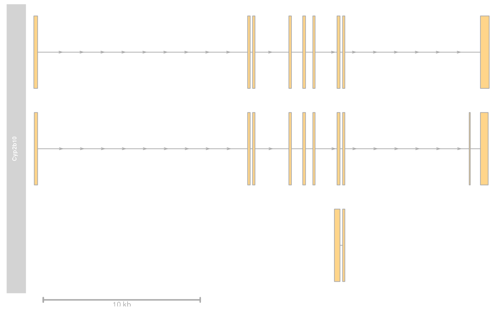
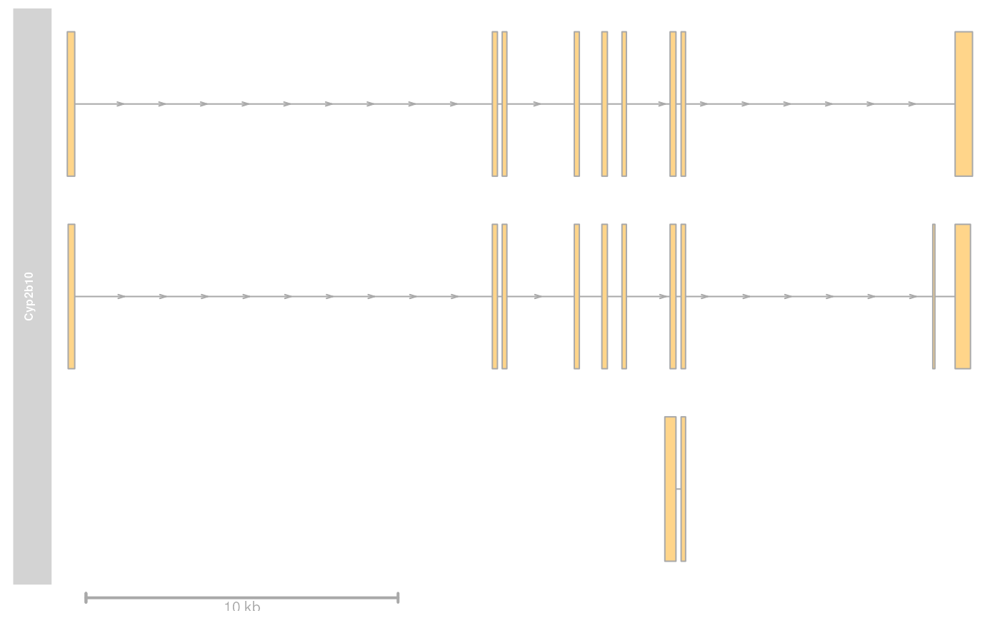

GenomeAxisTrack class and methods
GenomeAxisTrack-class.RdA class representing a customizable genomic axis.
GenomeAxisTrack(range=NULL, name="Axis", id, ...)Objects from the class
Objects can be created using the constructor function
GenomeAxisTrack.
Arguments
- range
Optional
GRangesorIRangesobject to highlight certain regions on the axis.- name
Character scalar of the track's name used in the title panel when plotting.
- id
A character vector of the same length as
rangecontaining identifiers for the ranges. If missing, the constructor will try to extract the ids fromnames(range).- ...
Additional items which will all be interpreted as further display parameters. See
settingsand the "Display Parameters" section below for details.
Details
A GenomeAxisTrack can be customized using the familiar display
parameters. By providing a GRanges or IRanges object to
the constructor, ranges on the axis can be further highlighted.\
With the scale display parameter, a small scale indicator can
be shown instead of the entire genomic axis. The scale can either be
provided as a fraction of the plotting region (it will be rounded to
the nearest human readable absolute value) or as an absolute value and
is always displayed in bp, kb, mb or gb units. Note that most display
parameters for the GenomeAxisTrack are ignored when a scale is
used insterad of the full axis. In particular, only the parameters
exponent, alpha, lwd, col, cex,
distFromAxis and labelPos are used.
Value
The return value of the constructor function is a new object of class
GenomeAxisTrack.
Slots
Extends
Class "GdObject", directly.
Methods
In the following code chunks, obj is considered to be an object of class GenomeAxisTrack.
Exported in the name space:
- [
signature(x="GenomeAxisTrack"): subset theGRangesobject in therangeslot. For most applications, thesubsetmethod may be more appropriate.Additional Arguments:
i: subsetting incides.
Examples:
obj[1:5]
- start, end, width
signature(x="GenomeAxisTrack"): the start or end coordinates of the track items, or their width in genomic coordinates.Usage:
start(x)end(x)width(x)Examples:
start(obj)end(obj)width(obj)
- range
signature(x="GenomeAxisTrack"): return the genomic coordinates for the track as an object of classIRanges.Usage:
range(x)Examples:
range(obj)
- ranges
signature(x="GenomeAxisTrack"): return the genomic coordinates for the track along with all additional annotation information as an object of classGRanges.Usage:
ranges(x)Examples:
ranges(obj)
- strand
signature(x="GenomeAxisTrack"): return a vector of strand specifiers for all track items, in the form '+' for the Watson strand, '-' for the Crick strand or '*' for either of the two.Usage:
strand(x)Examples:
strand(obj)
- values
signature(x="GenomeAxisTrack"): return all additional annotation information except for the genomic coordinates for the track items.Usage:
values(x)Examples:
values(obj)
- subset
signature(x="GenomeAxisTrack"): subset aGenomeAxisTrackby coordinates and sort if necessary.Usage:
subset(x, from, to, sort=FALSE, ...)Additional Arguments:
from,to: the coordinates range to subset to.sort: sort the object after subsetting. Usually not necessary....: additional arguments are ignored.
Examples:
subset(obj, from=10, to=20, sort=TRUE)
- length
signature(x="GenomeAxisTrack"): return the number of items stored in therangesslot.Usage:
length(x)Examples:
length(obj)
Internal methods:
- drawGD
signature(GdObject="GenomeAxisTrack"): the workhorse function to plot the object.Usage:
drawGD(GdObject, minBase, maxBase, prepare=FALSE, subset=TRUE, ...)Additional Arguments:
minBase,maxBase: the coordinate range to plot.prepare: run method in preparation or in production mode.subset: subset the object to the visible region or skip the potentially expensive subsetting operation....: all further arguments are ignored.
Examples:
Gviz:::drawGD(obj)Gviz:::drawGD(obj, minBase=1, maxBase=100)Gviz:::drawGD(obj, prepare=TRUE, subset=FALSE)
- collapseTrack
signature(GdObject="GenomeAxisTrack"): preprocess the track before plotting. This will collapse overlapping track items based on the available resolution and increase the width and height of all track objects to a minimum value to avoid rendering issues. Seecollapsingfor details.Usage:
collapseTrack(GdObject, diff=.pxResolution(coord="x"))Additional Arguments:
diff: the minimum pixel width to display, everything below that will be inflated to a width ofdiff.
Examples:
Gviz:::collapseTrack(obj)
- initialize
signature(.Object="GenomeAxisTrack"): initialize the object- show
signature(object="GenomeAxisTrack"): show a human-readable summary of the object
Inherited:
- displayPars
signature(x="GenomeAxisTrack", name="character"): list the value of the display parametername. Seesettingsfor details on display parameters and customization.Usage:
displayPars(x, name)Examples:
displayPars(obj, "col")
- displayPars
signature(x="GenomeAxisTrack", name="missing"): list the value of all available display parameters. Seesettingsfor details on display parameters and customization.Examples:
displayPars(obj)
- getPar
signature(x="GenomeAxisTrack", name="character"): alias for thedisplayParsmethod. Seesettingsfor details on display parameters and customization.Usage:
getPar(x, name)Examples:
getPar(obj, "col")
- getPar
signature(x="GenomeAxisTrack", name="missing"): alias for thedisplayParsmethod. Seesettingsfor details on display parameters and customization.Examples:
getPar(obj)
- displayPars<-
signature(x="GenomeAxisTrack", value="list"): set display parameters using the values of the named list invalue. Seesettingsfor details on display parameters and customization.Usage:
displayPars<-(x, value)Examples:
displayPars(obj) <- list(col="red", lwd=2)
- setPar
signature(x="GenomeAxisTrack", value="character"): set the single display parameternametovalue. Note that display parameters in theGenomeAxisTrackclass are pass-by-reference, so no re-assignmnet to the symbolobjis necessary. Seesettingsfor details on display parameters and customization.Usage:
setPar(x, name, value)Additional Arguments:
name: the name of the display parameter to set.
Examples:
setPar(obj, "col", "red")
- setPar
signature(x="GenomeAxisTrack", value="list"): set display parameters by the values of the named list invalue. Note that display parameters in theGenomeAxisTrackclass are pass-by-reference, so no re-assignmnet to the symbolobjis necessary. Seesettingsfor details on display parameters and customization.Examples:
setPar(obj, list(col="red", lwd=2))
- group
signature(GdObject="GenomeAxisTrack"): return grouping information for the individual items in the track. Unless overwritten in one of the sub-classes, this usualy returnsNULL.Usage:
group(GdObject)Examples:
group(obj)
- names
signature(x="GenomeAxisTrack"): return the value of thenameslot.Usage:
names(x)Examples:
names(obj)
- names<-
signature(x="GenomeAxisTrack", value="character"): set the value of thenameslot.Usage:
names<-(x, value)Examples:
names(obj) <- "foo"
- coords
signature(ImageMap="GenomeAxisTrack"): return the coordinates from the internal image map.Usage:
coords(ImageMap)Examples:
coords(obj)
- tags
signature(x="GenomeAxisTrack"): return the tags from the internal image map.Usage:
tags(x)Examples:
tags(obj)
- drawAxis
signature(GdObject="GenomeAxisTrack"): add a y-axis to the title panel of a track if necessary. Unless overwritten in one of the sub-classes this usualy does not plot anything and returnsNULL.Usage:
drawAxis(x, ...)Additional Arguments:
...: all further arguments are ignored.
Examples:
Gviz:::drawAxis(obj)
- drawGrid
signature(GdObject="GenomeAxisTrack"): superpose a grid on top of a track if necessary. Unless overwritten in one of the sub-classes this usualy does not plot anything and returnsNULL.Usage:
drawGrid(GdObject, ...)Additional Arguments:
...: additional arguments are ignored.
Examples:
Gviz:::drawGrid(obj)
Display Parameters
The following display parameters are set for objects of class
GenomeAxisTrack upon instantiation, unless one or more of them
have already been set by one of the optional sub-class initializers,
which always get precedence over these global defaults. See
settings for details on setting graphical parameters
for tracks.
add35=FALSE: Logical scalar. Add 3' to 5' direction indicators.add53=FALSE: Logical scalar. Add 5' to 3' direction indicators.background.title="transparent": Character scalar. The background color for the title panel. Defaults to omit the background.cex=0.8: Numeric scalar. The overall font expansion factor for the axis annotation text.cex.id=0.7: Numeric scalar. The text size for the optional range annotation.col="darkgray": Character scalar. The color for the axis lines and tickmarks.col.border.title="transparent": Integer or character scalar. The border color for the title panels.col.id="white": Character scalar. The text color for the optional range annotation.col.range="cornsilk4": Character scalar. The border color for highlighted regions on the axis.distFromAxis=1: Numeric scalar. Control the distance of the axis annotation from the tick marks.exponent=NULL: Numeric scalar. The exponent for the axis coordinates, e.g., 3 means mb, 6 means gb, etc. The default is to automatically determine the optimal exponent.fill.range="cornsilk3": Character scalar. The fill color for highlighted regions on the axis.fontcolor="#808080": Character scalar. The font color for the axis annotation text.fontsize=10: Numeric scalar. Font size for the axis annotation text in points.labelPos="alternating": Character vector, one in "alternating", "revAlternating", "above" or "below". The vertical positioning of the axis labels. Ifscaleis notNULL, the possible values are "above", "below" and "beside".littleTicks=FALSE: Logical scalar. Add more fine-grained tick marks.lwd=2: Numeric scalar. The line width for the axis elementes.lwd.border.title=1: Integer scalar. The border width for the title panels.scale=NULL: Numeric scalar. If notNULLa small scale is drawn instead of the full axis, if the value is between 0 and 1 it is interpreted as a fraction of the current plotting region, otherwise as an absolute length value in genomic coordinates.showId=FALSE: Logical scalar. Show the optional range highlighting annotation.showTitle=FALSE: Logical scalar. Plot a title panel. Defaults to omit the title panel.size=NULL: Numeric scalar. The relative size of the track. Can be overridden in theplotTracksfunction. Defaults to the ideal size based on the other track settings.ticksAt=NULL: Numeric scalar. The exact x-position for tickmarks (in base-pairs).
Additional display parameters are being inherited from the respective
parent classes. Note that not all of them may have an effect on the
plotting of GenomeAxisTrack objects.
-
alpha=1: Numeric scalar. The transparency for all track items.alpha.title=NULL: Numeric scalar. The transparency for the title panel.background.legend="transparent": Integer or character scalar. The background color for the legend.background.panel="transparent": Integer or character scalar. The background color of the content panel.cex.axis=NULL: Numeric scalar. The expansion factor for the axis annotation. Defaults toNULL, in which case it is automatically determined based on the available space.cex.title=NULL: Numeric scalar. The expansion factor for the title panel. This effects the fontsize of both the title and the axis, if any. Defaults toNULL, which means that the text size is automatically adjusted to the available space.col.axis="white": Integer or character scalar. The font and line color for the y axis, if any.col.frame="lightgray": Integer or character scalar. The line color used for the panel frame, ifframe==TRUEcol.grid="#808080": Integer or character scalar. Default line color for grid lines, both whentype=="g"inDataTracks and when display parametergrid==TRUE.col.line=NULL: Integer or character scalar. Default colors for plot lines. Usually the same as the globalcolparameter.col.symbol=NULL: Integer or character scalar. Default colors for plot symbols. Usually the same as the globalcolparameter.col.title="white"(Aliases: fontcolor.title): Integer or character scalar. The border color for the title panelscollapse=TRUE: Boolean controlling whether to collapse the content of the track to accomodate the minimum current device resolution. Seecollapsingfor details.fill="lightgray": Integer or character scalar. Default fill color setting for all plotting elements, unless there is a more specific control defined elsewhere.fontface=1: Integer or character scalar. The font face for all text, unless a more specific definition exists.fontface.title=2: Integer or character scalar. The font face for the title panels.fontfamily="sans": Integer or character scalar. The font family for all text, unless a more specific definition exists.fontfamily.title="sans": Integer or character scalar. The font family for the title panels.frame=FALSE: Boolean. Draw a frame around the track when plotting.grid=FALSE: Boolean, switching on/off the plotting of a grid.h=-1: Integer scalar. Parameter controlling the number of horizontal grid lines, seepanel.gridfor details.lineheight=1: Numeric scalar. The font line height for all text, unless a more specific definition exists.lty="solid": Numeric scalar. Default line type setting for all plotting elements, unless there is a more specific control defined elsewhere.lty.grid="solid": Integer or character scalar. Default line type for grid lines, both whentype=="g"inDataTracks and when display parametergrid==TRUE.lwd.grid=1: Numeric scalar. Default line width for grid lines, both whentype=="g"inDataTracks and when display parametergrid==TRUE.lwd.title=1: Integer scalar. The border width for the title panelsmin.distance=1: Numeric scalar. The minimum pixel distance before collapsing range items, only ifcollapse==TRUE. Seecollapsingfor details.min.height=3: Numeric scalar. The minimum range height in pixels to display. All ranges are expanded to this size in order to avoid rendering issues. Seecollapsingfor details.min.width=1: Numeric scalar. The minimum range width in pixels to display. All ranges are expanded to this size in order to avoid rendering issues. Seecollapsingfor details.reverseStrand=FALSE: Logical scalar. Set up the plotting coordinates in 3' -> 5' direction ifTRUE. This will effectively mirror the plot on the vertical axis.rotation=0: The rotation angle for all text unless a more specific definiton exists.rotation.title=90(Aliases: rotation.title): The rotation angle for the text in the title panel. Even though this can be adjusted, the automatic resizing of the title panel will currently not work, so use at own risk.showAxis=TRUE: Boolean controlling whether to plot a y axis (only applies to track types where axes are implemented).v=-1: Integer scalar. Parameter controlling the number of vertical grid lines, seepanel.gridfor details.
See also
Examples
## Construct object
axTrack <- GenomeAxisTrack(name="Axis",
range <- IRanges(start=c(100, 300, 800), end=c(150, 400, 1000)))
# \dontshow{
## For some annoying reason the postscript device does not know about
## the sans font
if(!interactive())
{
font <- ps.options()$family
displayPars(axTrack) <- list(fontfamily=font, fontfamily.title=font)
}
# }
## Plotting
plotTracks(axTrack, from=0, to=1100)
## Track names
names(axTrack)
#> [1] "Axis"
names(axTrack) <- "foo"
## Subsetting and splitting
subTrack <- subset(axTrack, from=0, to=500)
length(subTrack)
#> [1] 2
subTrack[1]
#> Genome axis 'foo'
#> There are annotated axis regions:
#> GRanges object with 1 range and 0 metadata columns:
#> seqnames ranges strand
#> <Rle> <IRanges> <Rle>
#> [1] dummy 100-150 *
#> -------
#> seqinfo: 1 sequence from an unspecified genome; no seqlengths
split(axTrack, c(1,1,2))
#> $`1`
#> Genome axis 'foo'
#> There are annotated axis regions:
#> GRanges object with 2 ranges and 0 metadata columns:
#> seqnames ranges strand
#> <Rle> <IRanges> <Rle>
#> [1] dummy 100-150 *
#> [2] dummy 300-400 *
#> -------
#> seqinfo: 1 sequence from an unspecified genome; no seqlengths
#>
#> $`2`
#> Genome axis 'foo'
#> There are annotated axis regions:
#> GRanges object with 1 range and 0 metadata columns:
#> seqnames ranges strand
#> <Rle> <IRanges> <Rle>
#> [1] dummy 800-1000 *
#> -------
#> seqinfo: 1 sequence from an unspecified genome; no seqlengths
#>
## Accessors
start(axTrack)
#> [1] 100 300 800
end(axTrack)
#> [1] 150 400 1000
width(axTrack)
#> [1] 51 101 201
strand(axTrack)
#> [1] "*" "*" "*"
range(axTrack)
#> IRanges object with 3 ranges and 0 metadata columns:
#> start end width
#> <integer> <integer> <integer>
#> [1] 100 150 51
#> [2] 300 400 101
#> [3] 800 1000 201
ranges(axTrack)
#> GRanges object with 3 ranges and 0 metadata columns:
#> seqnames ranges strand
#> <Rle> <IRanges> <Rle>
#> [1] dummy 100-150 *
#> [2] dummy 300-400 *
#> [3] dummy 800-1000 *
#> -------
#> seqinfo: 1 sequence from an unspecified genome; no seqlengths
## Annotation
values(axTrack)
#> data frame with 0 columns and 3 rows
## Grouping
group(axTrack)
#> NULL
## HTML image map
coords(axTrack)
#> NULL
tags(axTrack)
#> NULL
axTrack <- plotTracks(axTrack)$foo
 coords(axTrack)
#> x1 y1 x2 y2
#> 1 13.51842 216.6 38.68304 263.4
#> 2 114.17690 216.6 164.50614 263.4
#> 3 365.82310 216.6 465.97828 263.4
tags(axTrack)
#> $title
#> 1 2 3
#> "1" "2" "3"
#>
#> $start
#> 1 2 3
#> "100" "300" "800"
#>
#> $end
#> 1 2 3
#> "150" "400" "999"
#>
## adding an axis to another track
data(cyp2b10)
grTrack <- GeneRegionTrack(start=26682683, end=26711643,
rstart=cyp2b10$start, rends=cyp2b10$end, chromosome=7, genome="mm9",
transcript=cyp2b10$transcript, gene=cyp2b10$gene, symbol=cyp2b10$symbol,
name="Cyp2b10", strand=cyp2b10$strand)
plotTracks(list(grTrack, GenomeAxisTrack()))
plotTracks(list(grTrack, GenomeAxisTrack(scale=0.1)))
coords(axTrack)
#> x1 y1 x2 y2
#> 1 13.51842 216.6 38.68304 263.4
#> 2 114.17690 216.6 164.50614 263.4
#> 3 365.82310 216.6 465.97828 263.4
tags(axTrack)
#> $title
#> 1 2 3
#> "1" "2" "3"
#>
#> $start
#> 1 2 3
#> "100" "300" "800"
#>
#> $end
#> 1 2 3
#> "150" "400" "999"
#>
## adding an axis to another track
data(cyp2b10)
grTrack <- GeneRegionTrack(start=26682683, end=26711643,
rstart=cyp2b10$start, rends=cyp2b10$end, chromosome=7, genome="mm9",
transcript=cyp2b10$transcript, gene=cyp2b10$gene, symbol=cyp2b10$symbol,
name="Cyp2b10", strand=cyp2b10$strand)
plotTracks(list(grTrack, GenomeAxisTrack()))
plotTracks(list(grTrack, GenomeAxisTrack(scale=0.1)))
 plotTracks(list(grTrack, GenomeAxisTrack(scale=5000)))
plotTracks(list(grTrack, GenomeAxisTrack(scale=0.5, labelPos="below")))

plotTracks(list(grTrack, GenomeAxisTrack(scale=5000)))
plotTracks(list(grTrack, GenomeAxisTrack(scale=0.5, labelPos="below")))
